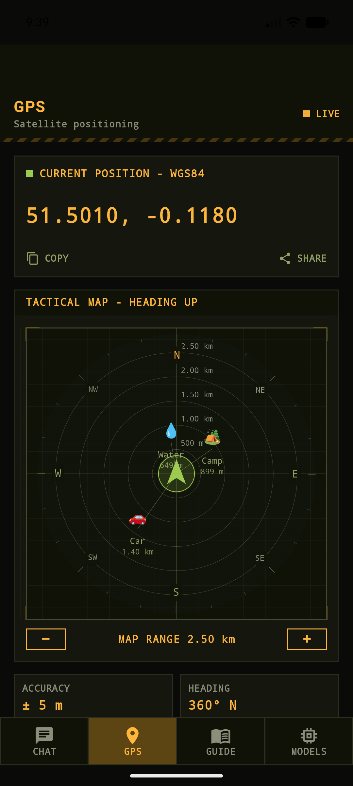
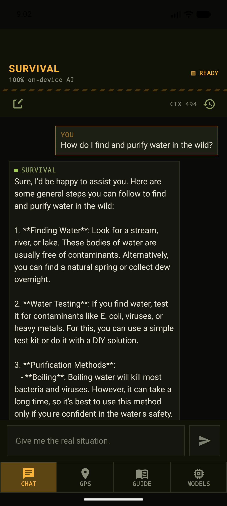
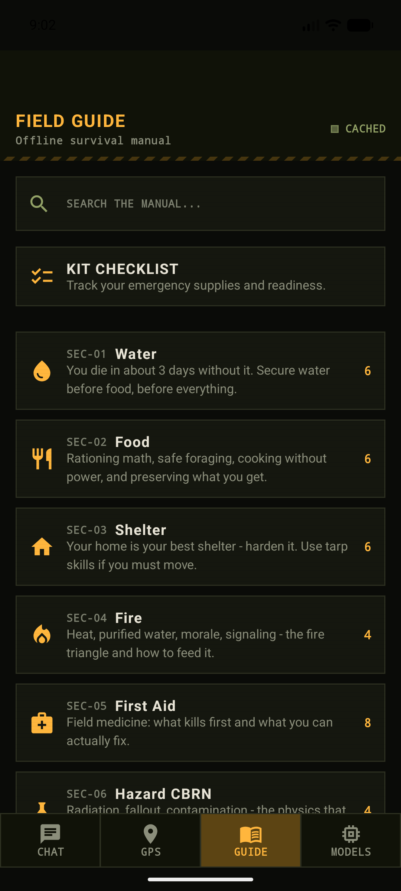
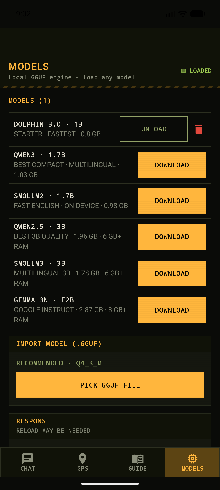

A complete survival toolkit that lives on your phone: an on-device AI advisor, a heading-up GPS radar for your camps and gear, and a field manual that works in airplane mode. Built for the outdoors, blackouts, travel and emergencies.
Everything runs locally on your phone. The only time SurvivAl touches the internet is when you choose to download an AI model.
A compact AI model stored on your device answers survival questions in seconds — in plain language, with no connection and no account.
Heading-up radar with distance rings, a live compass rose and smooth animations. Mark your camp, car or a water source — SurvivAl draws the bearing and distance.
A curated offline manual: water, food, shelter, fire, first aid and CBRN hazards — with full-text search that works in airplane mode.
Track your emergency supplies and readiness. Tick items off and always know how prepared you actually are.
One-tap download of recommended compact models, or import any GGUF file from your storage. Tune context, CPU power and GPU acceleration.
No account, no analytics, no ads, no tracking. Conversations, waypoints and settings never leave your device.
Waypoints are placed on first launch — water, camp and car — and everything stays fully editable. It works exactly like the radars in survival games.




No commands to memorize. Everything runs on your device — your questions never leave your phone.
One-time purchase. No account, no sign-up, no permissions beyond location for the radar.
Download a recommended compact AI (0.8–3 GB, one time) or import any GGUF file. Wi-Fi recommended; it only happens once.
Ask questions, mark waypoints, read the guide, check your kit — everything keeps working when the bars disappear.
AI models by their respective authors (Bartowski, Unsloth AI, Hugging Face, Qwen, Google DeepMind, ggml-org), downloaded from huggingface.co. Offline inference powered by llama.cpp.
SurvivAl is an offline AI assistant, not a professional rescue service. It can make mistakes — always verify anything important. In a real emergency, contact your local emergency number.